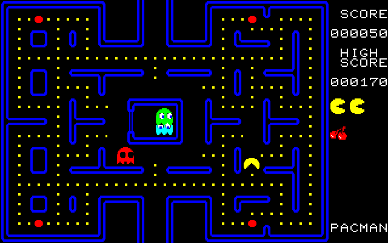
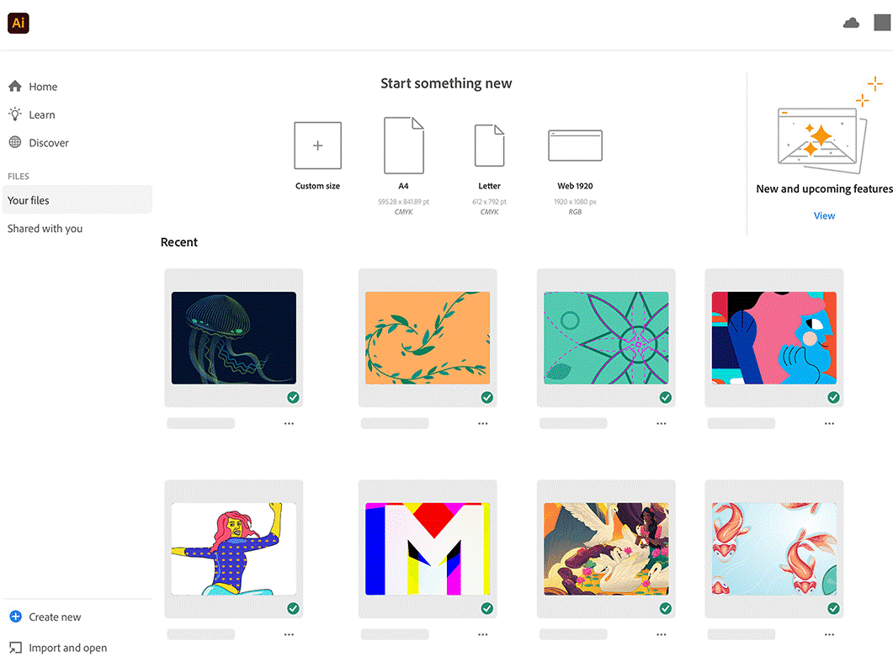
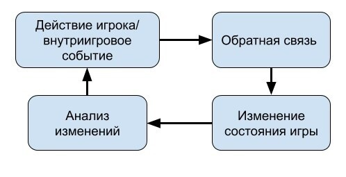

Введение в геймдизайн
Геймдизайн – это необычная и многогранная дисциплина, которая лежит в основе абсолютной любой видеоигре: начиная от «Tetris», заканчивая сложными многопользовательские играми. Он объединяет искусство и технологию, психологию и повествование, чтобы создать уникальный и интересный игровой опыт. В данное время, где видеоигры стали одни из самых популярных деятельностей в свободное время, особенно у подростков, геймдизайн играет важную роль, в создании того, как миллионы людей проводят свой досуг.
Определенно точного термина, что такое геймдизайна нет. В интернете их довольно много, но многие из них отличаются от друга. Но есть более общее и определение:
Геймдизайн - это процесс принятия решений о том, какой будет игра.
Термин является по понятнее и конкретнее. Из этого определения можно выделить первичная его цель – разработка контента игры и ее особенности.
Геймдизайнер – то человек, который проектирует игровой опыт. Он создаёт не только структуру игры, но и решает какие эмоции будет испытывать игрок на каждом её этапе. В этом смысле работа геймдизайнера очень похожа на работу кинорежиссёра. Он управляет процессом производства игры, и в этой сущности он выступает как полноценный продакт-менеджер. Геймдизайнер конструирует базовую динамику игры, которая отвечает за общее ощущение от игры у пользователя. Базовая динамика основана в свою очередь на базовой игровой механике — способах взаимодействия объектов с игроком и игровым пространством.
Разобраться в осуществлении задачи в геймдизайне не просто. Решение этой проблемы лежит в сути профессии геймдизайнера. Разработчик помогает понять, как создавать игры разного уровня, такие как просты и сложные. Геймдизайн помогает учить игроков, не перегружая их лишней информацией. Он говорит, как объединить истории и правила в цельную смысловую систему. Ни один разработчик не может просто взять и решить эту проблему, даже если это лучшая работа в мире. Настоящие геймдизайнеры не просто знают решение – они знают, как найти их, используя тестирование, планирование и анализ. Знание процесса показывает, когда тестировать и как, когда планировать, а когда нет, как работать с другими и избегать творческих тупиков. Понимание профессиональной области геймдизайна не означает слепого следования правилом с целью снова и снова получать один и тоже результат. Это означает анализ плюсов и минусов решений. Если игра не получила признания, это редко связано с тем, что разработчик сделал неправильный логически выбор. Скорее разработчик просто не выбрал оптимальный вариант.
Основные обязанности геймдизайнера:- Разработка концепта игр.
- Проектирование базовой игровой механики.
- Проектирование игрового баланса.
- Создание образов игровых персонажей.
- Планирование игрового процесса на протяжении всей игры.
- Написание дизайн-документа по игре.
- Корректировка концепции игры в процессе разработки.
- Координация задействованных в работе специалистов
- Способы возможной монетизации игры.
Когда все идеи собраны в концепте, в дизайн-документе (ГДД) прописываются конкретные планы их воплощения в жизнь. Теперь задача геймдизайнера — следить за реализацией игры: чтобы все идеи были учтены, а все персонажи были правильно созданы.
История Геймдизайна
История геймдизайна имеет огромное значение для понимания современных тенденций в этой области. Изучение истории помогает понять, как развивалась и эволюционировала игровая механика, графика, сюжеты и другие аспекты игр.История геймдизайна позволяет узнать, какие механики и концепты успешно применялись в прошлом и как они влияли на игровое сообщество. Различные жанр игр, такие как платформеры и шутеры, эволюционировали с течением времени. Изучая историю геймдизайна, можно понять, какие принципы и концепции стоит учитывать при создании своей собственной игры. Кроме того, это помогает определить текущие тренды и направления в развитии игровой индустрии. Ведь многие успешные игровые серии и проекты рождались благодаря умению разработчиков улавливать тенденции и ориентироваться на предпочтения игроков.
Это важно!
История геймдизайна начинается задолго до появления видеоигр. Настольные игры, такие как шахматы и го, существовали на протяжении тысячелетий и служили основой для развития игровых механик.
В 1970-е и 1980-е годы – являются золотой эрой аркадных игр. Такие проекты как «Space Invaders (1978)» и «Pac-Man (1980)» заложили основы игрового дизайны, введя концепты прогрессирующей сложности и запоминающихся персонажей.
1980-е годы были знаменательны для развития графических игр и появления первых персональных компьютеров. Разработчики начали внедрять спрайтовую графику, что дало новые возможности для создания более реалистичных и интерактивных игровых миров. Одной из наиболее важных игр того времени была "Super Mario Bros.", выпущенная в 1985 году, которая стала иконой платформенного жанра.
Обратите внимание
В 90-е годы произошли революционные изменения: игры стали сложнее и эмоционально насыщеннее. Появились новые игровые консоли, такие как Sega Genesis и Super Nintendo, а также мощные компьютеры и развивающийся интернет. Эти новые возможности привели к появлению сложных сюжетов и усовершенствованной графики, открытых миров и свободного исследования. «Doom», «Diablo» и «The Legend of Zelda: Ocarina of Time» заложили основы для будущих инноваций в геймдизайне.
С 1990 по 2000 года произошла революция в геймдизайне с появлением 3D-графики. Игры, такие как "Doom", "Quake" и "Tomb Raider", стали первыми успешными примерами использования трехмерной графики. Это позволило разработчикам создавать более реалистичные и захватывающие миры. "Doom", выпущенная в 1993 году, стала одной из первых игр, использующих 3D-графику и шутер от первого лица, что сделало ее культовой среди геймеров. "Tomb Raider", выпущенная в 1996 году, представила игрокам Лару Крофт, одного из самых узнаваемых персонажей в истории видеоигр, и стала основополагающей для жанра приключенческих игр.
Переход в 3D также способствовал развитию новых жанров игр. Появились такие жанры, как шутеры от первого лица (FPS), ролевые игры (RPG) и стратегии в реальном времени (RTS). Игры, такие как «Half-Life», «Final Fantasy VII» и «StarCraft», стали культовыми и задали новые стандарты для геймдизайна. «Half-Life», выпущенная в 1998 году, стала революционной благодаря своему нарративу и интеграции сюжета в геймплей. «Final Fantasy VII», выпущенная в 1997 году, стала одной из самых популярных RPG всех времен благодаря своему эпическому сюжету и инновационной системе боя. «StarCraft», выпущенная в 1998 году, стала основополагающей для жанра RTS и до сих пор остается одной из самых популярных стратегических игр.

С появлением мобильных технологий и развитием смартфонов в игры стали доступны для игроков в любое время и в любом месте. Мобильные игры, такие как «Angry Birds» и «Candy Crush Saga», стали весьма популярными и привлекательными для широкой аудитории.
В последние годы инди-игры стали важной частью индустрии. Маленькие студии и независимые разработчики создают уникальные и инновационные игры, которые часто отличаются от мейнстримных проектов. Инди-игры, например, «Undertale» и «Hades» получили признание за оригинальность. «Undertale», выпущенная в 2015 году, стала популярной благодаря своему уникальному геймплею и глубокому сюжету. «Celeste», выпущенная в 2018 году, получила признание за свою сложность и эмоциональную историю. «Hades», выпущенная в 2020 году, стала одной из самых популярных игр года благодаря своему захватывающему геймплею и нарративу.
Подведём итоги
В истории геймдизайна с каждым периодом игры становились все более сложными, эмоциональными и технологически продвинутыми. Развитие компьютерных игр демонстрирует не только технический прогресс, но и влияние на культуру и общество.
Основные инструменты и программное обеспечение геймдизайнера
Выбор инструментов геймдизайнера зависит от того, какие навыки он хочет развивать. Нарративному дизайнеру будет достаточно текстовых редакторов, а левел-дизайнеру стоит изучить Photoshop или Blender, но в обоих случаях им не обязательно осваивать игровые движки.
Создание каждой игры начинается с концепции, которую нужно где-то зафиксировать, поэтому самый важный инструмент геймдизайнера — это текстовый редактор. Также в нем можно вести документацию проекта и создавать базу знаний для команды
Google Документы позволяют работать над концепции игры индивидуально или в команде. Геймдизайнер составляет в нем текстовое описание концепции, разбивает игровой процесс на основные этапы, описывает характеры персонажей, придумывает квесты и диалоги, а остальные члены команды могут оставлять свои комментарии или дополнения.
Notion удобен для введения документации с поддержкой мультимедийный файлов. В него также интегрировано множество сервисов, поэтому на страницы удобно добавлять ссылки на различные командные инструменты. Лучше всего Notion подходит для создания базы знаний о проекте, из которой потом получится хороший дизайн-документ
Основной функционал Miro — это доски, на которых можно собирать мудборды, составлять майндмэп и план развития проекта. В приложении также можно работать с текстом, составлять основу сценариев и продумывать концепции. Геймдизайнер может использовать блок-схемы в Miro, чтобы продумывать логику уровней, планировать квесты, основные ветки развития сюжета и персонажей, можно работать в команде и в ней присутствует приличное наличие шаблонов, которые уменьшают затрачиваемого время на концепт игры и его написанием.
Обратите внимание
Расчет баланса — одна из основных задач гейм-дизайнера. Каждую «фичу» нужно интегрировать в общую экономику игры — этим занимаются геймдизайнеры тоже.
Для этого нужно не только иметь хорошую математическую базу, но и хорошо понимать такие инструменты, как MS Excel или Google Sheets. С помощью их можно легко делать сложные расчеты с наглядными диаграммами и таблицами.
Диаграммы и интерфейс
После написании документации, подсчёта баланс, следующей задачей геймдизайнера станет рисованием мокапа
InVision(Web) –простой инструмент для интерактивных мокапов. Выгрузка статичных мокапов из Photoshop и вселение в них жизни в браузере. Интеграция со всем, что только можно подключить. Преимущество этой программы в том, что это программа так же подойдет для создания прототипов дизайна веб-приложений и приложений для мобильных устройств, создание резервных копий, белая доска для генерирования идей, наличие совместного режима.
Diagrams.net (ранее draw.io) — это бесплатное программное обеспечение с открытым исходным кодом для создания диаграмм, доступное как онлайн, так и офлайн. Поддерживает интеграцию с облачными сервисами, такими как Google Drive и OneDrive. Преимущества: бесплатное использование, поддержка различных форматов, интеграция с облачными хранилищами. Основные услуги: создание блок-схем, UML-диаграмм, схем сетей, организационных диаграмм.
Графические редакторы
для визуализации идей, разработки персонажей и элементов уровней геймдизайнеру стоит освоить несколько графических редакторов. Это способствует легче доносить видение геймдизайнера до команды, руководства или инвесторов. Особенно эти инструменты важны для тех, кто хочет сосредоточиться на левел-дизайне или дизайне персонажей.
Adobe Illustrator – Инструмент для работы с векторной графикой. В нем можно создавать изображения, которые бесконечно масштабируются без потери качества. В разработке игр это важно, так как некоторые элементы приходится адаптировать под разные форматы экранов.
Figma – Еще один отличный инструмент для макетирования различных окон внутри игры. Инструмент популярен среди web-дизайнеров, но и гейм-дизайнеру открывает широкий выбор инструментов для решения рабочих задач. В этой программе можно делать: интерактивные прототипы сайтов и мобильных приложений; элементы интерфейса — иконки, кнопки, меню, окна, формы обратной связи; векторные иллюстрации и так далее.
3D-редакторы
Обратите внимание
С этими инструментами стоит познакомиться при работе с 3D-проектами. Геймдизайнер, который может самостоятельно создавать и анимировать простые 3D-модели, собирать простые макеты уровней для тестирования, не привлекая к этому художников, значительно ускорит работу в команде
Blender – это универсальный пакет для работы с 3D-моделями. Он подходит для скульптинга, анимации, рендеринга и композитинга. Blender можно установить бесплатно. В геймдеве его используют для создания персонажей, артефактов, элементов окружения и для базового проектирования уровней.
ZBrush стал ведущим инструментом в сфере 3D-дизайна персонажей. Редактор специализируется на цифровой скульптуре, упрощая создание органических форм.
Игровые прототипы(движки)
В определённый момент своей карьеры гейм-дизайнер захочет делать прототипы игр сам. Для этого зачастую понадобится знание движка, на котором сделана игра. А для прототипов ещё и базовое знание программирования.
GameSalad – Очень простой движок для очень простых игр. 2D, drag’n’drop элементов, шаблоны логики, физика «из коробки», быстрое тестирование на устройстве. С его помощью детей учат делать игры.

Unity. Сильное сообщество способствует приличное количество ассетов, плагинов и туториалов. И 2D, и 3D. Без программирования на C# и базового знания API будет тяжко, но зато потом можно очень эффективно заниматься прототипированием. На лету из коробки не собирает.
Unreal Engine – Открытый игровой движок для создания 3D-проектов. В Unreal Engine есть функции моделирования, рендеринга в реальном времени и динамического освещения сцен. Прототипы игр в этом движке могут собирать разработчики с разным уровнем знаний в области программирования. Бесплатен для для персонального использования.
Среда разработки
Это важно!
Среда разработки – Это набор ПО для создания кода, которые помогают запускать, тестировать и отлаживать код. Просто необходимо почти для каждого проекта.
Visual Studio –DE (или среда разработки) от Microsoft. В этом редакторе можно писать код на любом языке программирования и пользоваться такими функциями, как интеллектуальное заполнение кода и откладки.
Rider – Еще одна среда разработки от JetBrains, которая поддерживает широкий спектр языков программирования. В этом редакторе тоже есть функция интеллектуального завершения кода, навигации по массиву данных и подсвечивания ошибок. Особенность Rider заключается в плотной интеграции с игровыми движками Unity или Unreal Engine.
Главенство эмоций в геймдизайне
Для создание интересного игрового опыта важно вызывать эмоции. Игры должны вызывать эмоции, но это не значит, что любая игра должна вызывать хохот и потери пульса . В быту «эмоциями» часто называют чувства, таких как ярость и горе. Даже нейтральные действия (например, чтения книги) генерируют микроэмоции. Такие эмоции продол жаются доли секунды и обычно находятся вне человеческих сознания. Но они всегда присутствуют, проявляясь в виде стимулов и мыслей.
События в игре вызывают такие же скрытые эмоции (или же микроэмоции). Даже мелкая неудача вызывает импульс разочарования. Момент неопределенности заставляет человека поволноваться, дыхание замирает.
Главенство эмоций – один из непризнанных секретов геймдизайна. При анализе мнений часто приводят аргументы, почему игра хорошая или плохая. Но, как правило, логика – просто автоматическая рационализация глубинных эмоций. Что действительно важно, так это то, какие чувства вызывает игра
В одном из многочисленных исследований, посвященных изучению поведение человека в различных ситуациях, ученые установили в магазине образцы четырех пар чулок и спросили покупателей, какие из них лучше всего по качеству. Восемьдесят процентов указали на чулки справа. Когда респондентов спросили почему, они ссылались на цвет или текстуру. На самом деле все чулки были одинаковыми. Респонденты выбрали чулки из-за их расположения, а потом пытались это аргументировать. Ложь была непреднамеренной, и люди не знали, что пытаются найти рациональное объяснение. Но это было так
Игроки почти всегда объясняют причины своих чувств, а не сами чувства. Пользователь скажет: «Мне понравилось, что это было быстро» или «Мне не было весело потому, что волшебные персонажи были скучными». Истина этих утверждений – грубые эмоции, стоящие за словами «мне понравилось» и «это не весело». Но игроки автоматически додумали причины, по которым они чувствовали все именно. У игроков нет прямой связи со своим эмоциональными механизмами, так как они не знают истинную природу своих чувств. Но они обладают способностью мгновенно рационализировать практически любое свое поведение или мнение.
Уловки и трюки геймдизайнеров, побуждающих игроков начать игру и продолжать в нее играть
Геймдизайнеры использую различные методы, чтобы завлечь игроков в игру. Одни из самых популярных способов – это награды за какое-то условие. Метод испытан и проверен временем. Кнут и пряник, награда и наказание, исторически были очень эффективным методом побуждения человека к определенному поведению. Способ также продолжает оставаться очень актуальной в наши дни.
Исследования подчеркивают, что игрока необходимо награждать, потому что пользователь почувствует увеличение дофамина. Этот гормон отвечает за удовлетворение от поощрения. На этом основан механизм действия известного ящика Скиннера: при помощи примитивных наград подопытную крысу можно приучить бездумно и бесконечно совершать любые действия — например, жать на рычаг. Точно так же при помощи наград можно манипулировать и игроком. Так же и с играми.
«Ящик Скиннера» довольно известен, благодаря принципу «кнута и пряника»: игроки выполняют действия, ожидая награды. Это тестовый аппарат, изобретенный одноименным психологом, специализировавшимся на бихевиоризме, который сыграл важную роль в успехе и привыкании ко всему, начиная от казино и заканчивая бесплатными играми или программами верности.
Согласно наиболее распространённой на текущий момент модели, — как среди учёных, так и среди геймдизайнеров, — все награды делятся на «внутренние» и «внешние».
Внутренние награды — это удовольствие, которое пользователь получает непосредственно от игрового процесса. Иными словами, речь о тех случаях, когда игрок играем просто потому, что пользователю интересно и приятно играть, и никакой дополнительной мотивации или награды не требуется.
Мэттью Джексон, геймдиректор Red Barrels Games, а в прошлом — старший гейдмизайнер в Ubisoft, — приводит в качестве примера захватывающие пейзаж из «Uncharted».

Внешние награды — это всё остальное. Предметы, ресурсы, повышение уровня, достижения, ежедневные вознаграждения — всё это призвано давать игроку дополнительную мотивацию на случай, если сам геймплей в эту минуту уже не удерживает пользователя у экрана настолько же эффективно.
Для полного понимания, ниже представлена таблица, где показано, от чего исходит внешняя и внутренняя мотивации
| Тип мотивации | Категории мотивации | Мотив |
|---|---|---|
| Внешняя мотивация | Внешняя мотивация; Навязана мотивация; Идентифицированная мотивация; Интегрированная мотивация; | За деньги; Потому что пообещал; Потому что мне кажется; важным; Потому что я такой человек; |
| Внутренняя мотивация | Внутренняя мотивация | Потому что мне это нравится; |
Например, в «Genshin Impact» игроки могут руководствоваться как внутренней (интерес к геймплею, так и внешней мотивацией (получение редких персонажей). Игроки сами стремятся заработать как можно «примогемов» и выбить легендарных (пятизвездочных) персонажей. Эти две мотивации должны создавать синергию друг с другом, потому что каждая может вытекать из каждой и по отдельности они существовать не могут.
Один из основных психологических принципов, о которых нужно помнить, создавая систему наград для игры, это так называемый «эффект чрезмерного обоснования». Он заключается в том, что внешние стимулы парадоксальным образом снижают внутреннюю мотивацию. Его существование подтверждается множеством исследований.
Обратите внимание
Бороться с этим эффектом можно двумя разными способами. Можно осторожнее обращаться с механизмами внешних вознаграждений. А можно, наоборот, построить игру на внешних наградах.
Одна из таких игр — Diablo III. Геймдизайнер Blizzard Трэвис Дэй рассказывает, что, достигнув максимального уровня большинство игроков немедленно бросало игру, если им долго не выпадал нужный им предмет. Оба механизма внешней стимуляции отказали одновременно — и игрок не видит никакого смысла оставаться в игре. Удовольствие от процесса его уже не мотивирует.
Тогда разработчики ввели так называемые «уровни совершенствования» — дополнительную систему прокачки для тех, кто уже достиг максимального уровня. И это сработало — теперь мотивации было достаточно
Состояние покоя
Чтобы игрок как можно дольше проводил времени в игре, он должен попасть в состояние потока (полное вовлечение в игровой процесс). Для него нужно соблюдение некоторых условий:
- Понятная цель.
- Контроль над ситуацией.
- Требования = умения.
Поток заставляет время исчезнуть. Если игрок полностью поглощен игрой, часы могут показаться минутами, которая соответствует уровню его способностей. Если задача слишком сложная, поток прерывается, поскольку игрок теряется и начинает волноваться. Если слишком простая – игроку становится скучно.
Поток является основой для хорошего игрового опыта. Он работает на всех уровнях напряжения и эмоциональных валентностях. Увлекательные экшн-игры, «квесты», требующие умственного напряжения, юмористические игры для социального взаимодействия – все это может создать поток, потому что каждая игра непрерывной занимает ум игрока, не перегружая его.
Погружение
Погружение – один из самых мощных игровых опытов. Один из возможных способов создание заключается в концепции психологии, называемой двухфакторной эмоций.
Двухфакторная теория эмоций гласит, что все различные сильные эмоции одинаковы с точки зрения физиологии и они основаны на состоянии возбуждения. Согласно теории, единственное различие между этими чувствами – это когнитивная интерпретация возбуждения, которой человек их наделяем.
Когнитивная интерпретация возбуждения – это сознательное логическое объяснение того, что вызывает состояние возбуждения. В зависимости от ситуации мозг будет отмечать состояние возбуждения как любую разновидность сильных эмоций. Например, нервная система на взводе, если за кем-то гонится медведь, в этом случае эмоциональное состояние – страх.
Чтобы создать опыт, который отражает опыт персонажа, нужно создать его из 3 частей. Во-первых, необходимо создать поток, чтобы «изъять» реальный мир из головы игрока. Во-вторых, создать состояние возбуждения, используя в игровой механике угрозы и трудности. Наконец, добавить сюжет, чтобы создать возбуждения игрока, которое будет соответствовать чувствам персонажа.
Одной из первых иммерсионных игр стала Doom, где игрок испытывал страх через игровую механику боя и атмосферы. Но в Doom игрок смотрим глазами космодесантника, застрявшего в кишащей демонами колонии на марсианской луне. Стоны зомби и окровавленный мир сигнализируют игроку о том, что возбуждение, которое он испытывает, – это не просто волнение, а страх.
Подведем итоги
Тот факт, что космодесантник взбудоражен из-за того, что демоны пытаются его убить, а игрок, свою очередь, взбудоражен из-за того, что в Doom хорошо продуманы бои, не имеет значения. В двухфакторной теории эмоций одни источник возбуждения взаимозаменяем другим.
Игровые механики
Определений понятия «механика» много. Каждая механика требует ресурсов на реализацию, настройку и тестирование. Требуются вычислительные ресурсы, которые можно было использовать где-то еще. Возможно, потребуется изменение сюжета или смещение фокуса маркетинга
Любая игра начинается с игровой механики, как основного инструмента взаимодействия с объектами в установленных ограничениях.
Это важно!
В основе механики лежат три базовых принципа: Действие/Способ, Изменение и Обратная связь.
Действие/способ — принцип, инструмент влияния на игровые объекты. То, каким образом игрок и/или ИИ (искусственный интеллект) через доступную систему ввода манипулируют игровыми объектами.
Изменение — перемена состояния игры после оказанного на игровые объекты воздействия. Формирует новый ментальный “ландшафт”, новое состояние игры.
Обратная связь — фиксация изменений через доступные сенсоры (зрение, слух, осязание, обоняние и т.п.), произошедших в игре, которые влияют на последующие решения игрока.
Стимулирует формирование новой стратегии поведения игрока, исходя из целей и задач.
Игровые механики могут быть скрытыми («внутренними»), о наличии которых игрок может вовсе не знать, и доступными («наружными»), с помощью которых игрок непосредственно взаимодействует с матрицей состояний. Вот, как это выглядит в виде блок-схемы:
Блок обратной связи не обязателен. Современные игры иногда перебарщивают и хвалят игрока за каждый клик. Наличие ярко выраженной обратной связи — признак хорошего тона и понятного геймплея.
Базовые механики, подобные шкале здоровья, принято называть атомарными. Они могут складываться в более сложные системы, которые называют комплексными механиками. Например, получение урона от вражеских атак — это комплексная игровая механика, которая включает в себя сразу несколько систем:
- шкала здоровья и манипуляции с ней (убавление и восполнение);
- способности игрока (возможность уклоняться от пуль, парировать удары и т.д.);
- временные аффекты: баффы (временные усилители), дебаффы (временные негативные эффекты) и правила их наложения;
- система экипировки;
Если меняется способ взаимодействия игрока с механикой, то трансформация происходит на ментальном уровне: в блоках анализа и действий игрока. Например, игрок научился использовать уже известную ему механику новым способом — в игре все осталось по-прежнему, а изменение произошло лишь в голове игрока.
Техническое развитие. Чтобы изменить правило, можно поменять числовые характеристики (вертикальное изменение) или повлиять на логическое условие или результат действия механики (горизонтальное изменение). Часто вертикальная и горизонтальная прогрессии идут парой в рамках одной игры — почти любая система улучшения персонажа.
Ментальное развитие происходит за счёт проведенного в игре времени, преодоления в ней новых препятствий (зачастую более сложных), а также при обучении на примере других игроков. Развития не произойдёт, если геймдизайнер не заставит игрока взглянуть на механику с иной стороны для решения стоящей перед ним задачи. Игрока нужно подтолкнуть; дать ему разглядеть потенциал механики и заставить использовать её нестандартно.
Вспомогательные механики
В исследовании Карло Фабрикаторе выделяет три типа вспомогательных механик: механика усиления, альтернативная механика, механика сопротивления.
Механика усиления включает в себя два способа усовершенствования основной механики.
Добавление нового функционала. Например, если в шутере от третьего лица оснастить автоматическую винтовку оптическим прицелом, то для этого типа оружия потребуется режим снайпера. Эти нововведения не только меняют характеристики оружия, но и открывают дополнительные возможности для выполнения текущих задач.
Улучшение уже существующей игровой механики. Так, при установке глушителя на автоматическую винтовку режим стрельбы не изменится, но свойства оружия станут другими: снизится громкость выстрелов.
Альтернативная механика. Если предложить различные способы выполнения одних и тех же задач разными способами, игровой опыт станет более увлекательным. В этом случае игроку потребуется проявить смекалку: например, договориться с NPC и избежать кровопролития или проявить своё мастерство в скрытном прохождении боевых зон с учётом нюансов окружения.
Механика сопротивления. Главная цель такой механики — замедлить прогресс игрока. Сюда входят различные ловушки, препятствия и прочие элементы, затрудняющие выполнение задач.
Подведем итоги
Используя все эти виды механик, геймдизайнер может выстроить разнообразный геймплей, который даст игроку мотивацию постоянно совершенствовать свои навыки и пройти игру до конца.